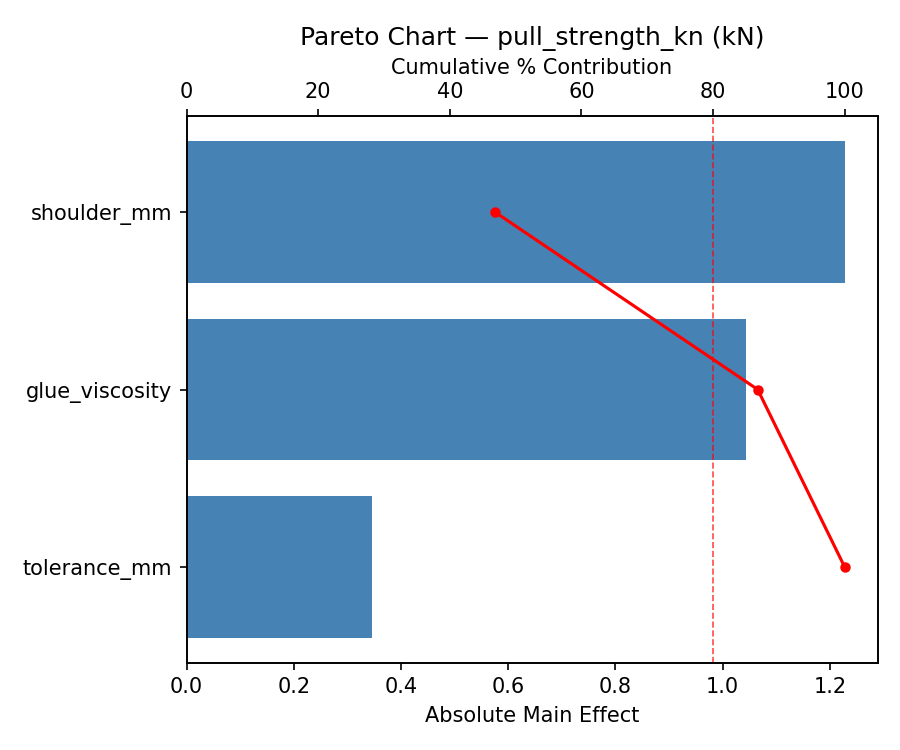
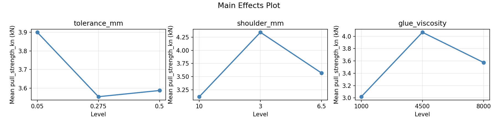
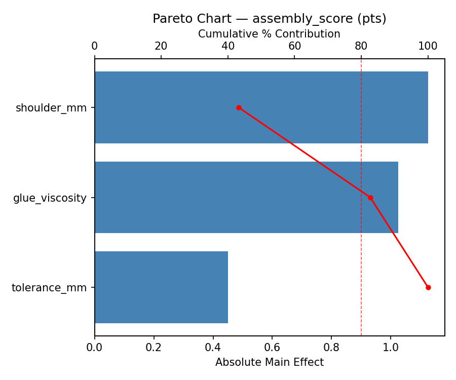
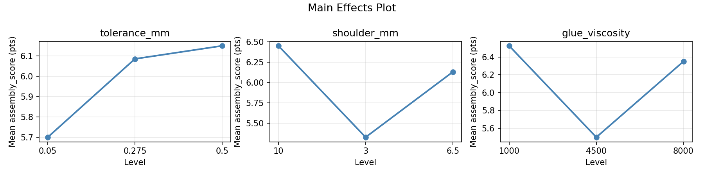
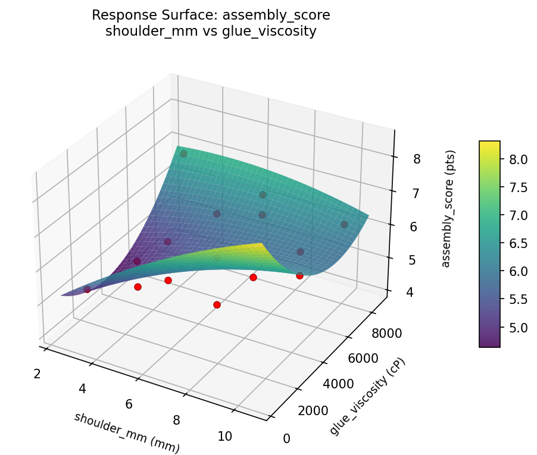
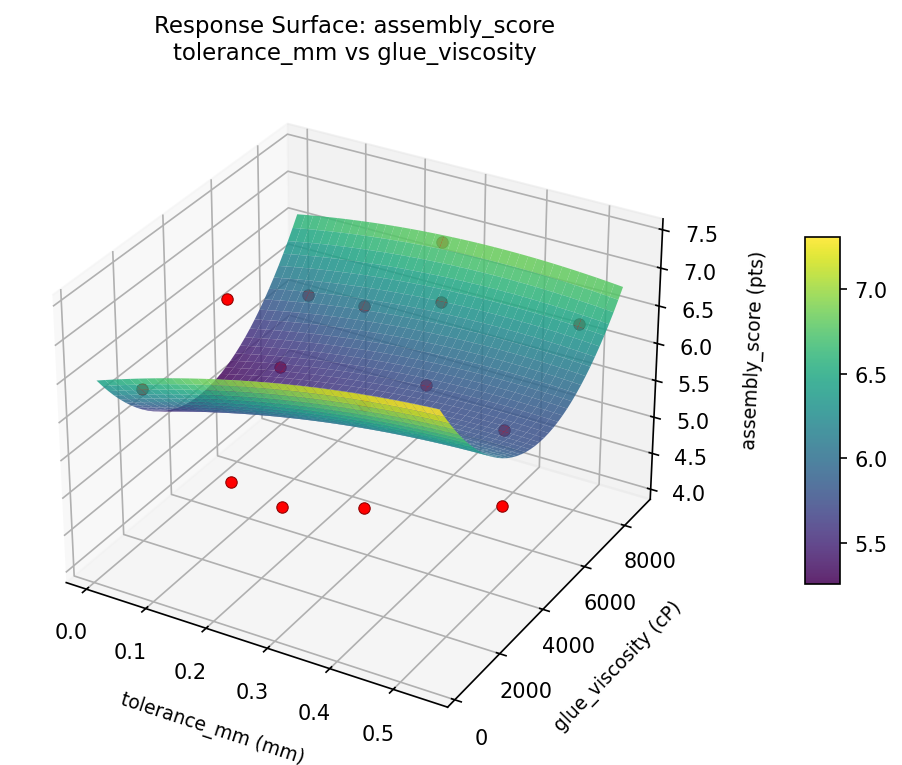
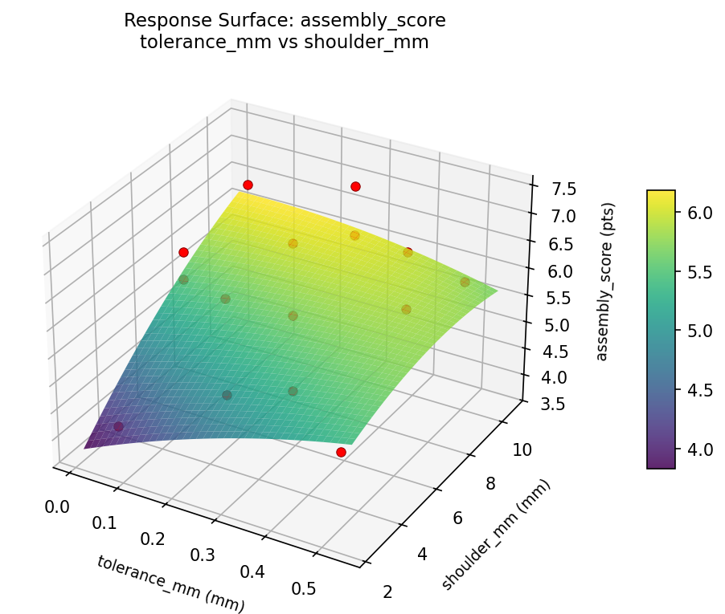
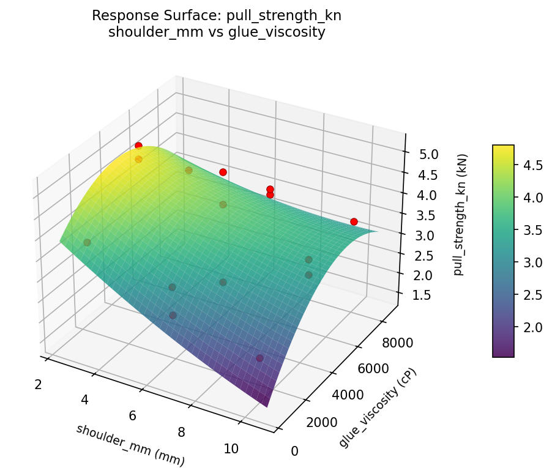
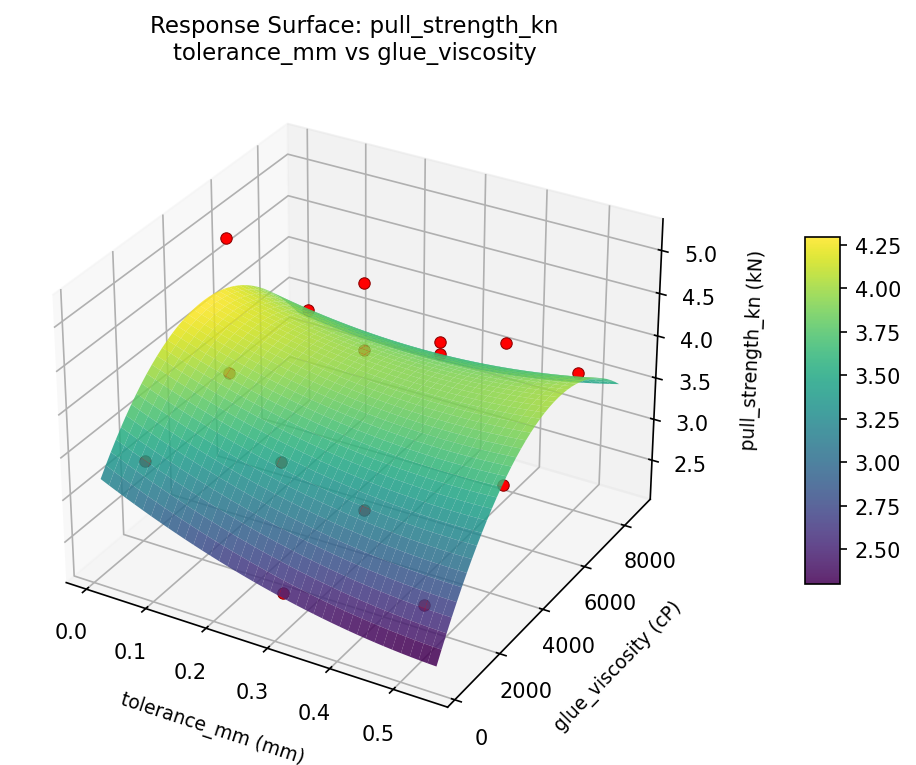
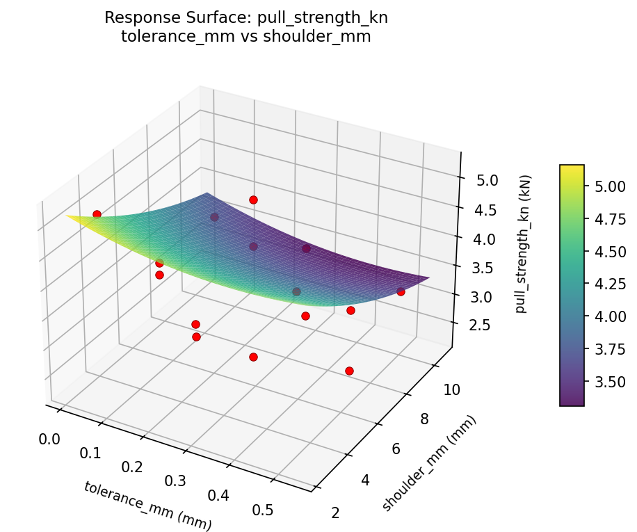

Summary
This experiment investigates mortise & tenon fit. Box-Behnken design to maximize joint strength and minimize assembly difficulty by tuning tenon thickness tolerance, shoulder depth, and glue type viscosity.
The design varies 3 factors: tolerance mm (mm), ranging from 0.05 to 0.5, shoulder mm (mm), ranging from 3 to 10, and glue viscosity (cP), ranging from 1000 to 8000. The goal is to optimize 2 responses: pull strength kn (kN) (maximize) and assembly score (pts) (maximize). Fixed conditions held constant across all runs include joint type = through_tenon, wood = white_oak.
A Box-Behnken design was chosen because it efficiently fits quadratic models with 3 continuous factors while avoiding extreme corner combinations — requiring only 15 runs instead of the 8 needed for a full factorial at two levels.
Quadratic response surface models were fitted to capture potential curvature and factor interactions. The RSM contour plots below visualize how pairs of factors jointly affect each response.
Key Findings
For pull strength kn, the most influential factors were shoulder mm (46.9%), glue viscosity (39.9%), tolerance mm (13.2%). The best observed value was 5.15 (at tolerance mm = 0.5, shoulder mm = 6.5, glue viscosity = 8000).
For assembly score, the most influential factors were shoulder mm (43.3%), glue viscosity (39.4%), tolerance mm (17.3%). The best observed value was 7.4 (at tolerance mm = 0.275, shoulder mm = 6.5, glue viscosity = 4500).
Recommended Next Steps
- Run confirmation experiments at the predicted optimal settings to validate the model.
- Consider whether any fixed factors should be varied in a future study.
Experimental Setup
Factors
| Factor | Low | High | Unit |
|---|
tolerance_mm | 0.05 | 0.5 | mm |
shoulder_mm | 3 | 10 | mm |
glue_viscosity | 1000 | 8000 | cP |
Fixed: joint_type = through_tenon, wood = white_oak
Responses
| Response | Direction | Unit |
|---|
pull_strength_kn | ↑ maximize | kN |
assembly_score | ↑ maximize | pts |
Configuration
{
"metadata": {
"name": "Mortise & Tenon Fit",
"description": "Box-Behnken design to maximize joint strength and minimize assembly difficulty by tuning tenon thickness tolerance, shoulder depth, and glue type viscosity"
},
"factors": [
{
"name": "tolerance_mm",
"levels": [
"0.05",
"0.5"
],
"type": "continuous",
"unit": "mm"
},
{
"name": "shoulder_mm",
"levels": [
"3",
"10"
],
"type": "continuous",
"unit": "mm"
},
{
"name": "glue_viscosity",
"levels": [
"1000",
"8000"
],
"type": "continuous",
"unit": "cP"
}
],
"fixed_factors": {
"joint_type": "through_tenon",
"wood": "white_oak"
},
"responses": [
{
"name": "pull_strength_kn",
"optimize": "maximize",
"unit": "kN"
},
{
"name": "assembly_score",
"optimize": "maximize",
"unit": "pts"
}
],
"settings": {
"operation": "box_behnken",
"test_script": "use_cases/202_mortise_tenon_fit/sim.sh"
}
}
Experimental Matrix
The Box-Behnken Design produces 15 runs. Each row is one experiment with specific factor settings.
| Run | tolerance_mm | shoulder_mm | glue_viscosity |
|---|
| 1 | 0.275 | 3 | 1000 |
| 2 | 0.275 | 6.5 | 4500 |
| 3 | 0.5 | 6.5 | 8000 |
| 4 | 0.5 | 6.5 | 1000 |
| 5 | 0.275 | 6.5 | 4500 |
| 6 | 0.275 | 6.5 | 4500 |
| 7 | 0.05 | 6.5 | 8000 |
| 8 | 0.5 | 3 | 4500 |
| 9 | 0.275 | 3 | 8000 |
| 10 | 0.5 | 10 | 4500 |
| 11 | 0.05 | 6.5 | 1000 |
| 12 | 0.275 | 10 | 8000 |
| 13 | 0.05 | 3 | 4500 |
| 14 | 0.05 | 10 | 4500 |
| 15 | 0.275 | 10 | 1000 |
Step-by-Step Workflow
1
Preview the design
$ python doe.py info --config use_cases/202_mortise_tenon_fit/config.json
2
Generate the runner script
$ python doe.py generate --config use_cases/202_mortise_tenon_fit/config.json \
--output use_cases/202_mortise_tenon_fit/results/run.sh --seed 42
3
Execute the experiments
$ bash use_cases/202_mortise_tenon_fit/results/run.sh
4
Analyze results
$ python doe.py analyze --config use_cases/202_mortise_tenon_fit/config.json
5
Get optimization recommendations
$ python doe.py optimize --config use_cases/202_mortise_tenon_fit/config.json
6
Generate the HTML report
$ python doe.py report --config use_cases/202_mortise_tenon_fit/config.json \
--output use_cases/202_mortise_tenon_fit/results/report.html
Features Exercised
| Feature | Value |
|---|
| Design type | box_behnken |
| Factor types | continuous (all 3) |
| Arg style | double-dash |
| Responses | 2 (pull_strength_kn ↑, assembly_score ↑) |
| Total runs | 15 |
Analysis Results
Generated from actual experiment runs using the DOE Helper Tool.
Response: pull_strength_kn
Top factors: shoulder_mm (46.9%), glue_viscosity (39.9%), tolerance_mm (13.2%).
Pareto Chart

Main Effects Plot

Response: assembly_score
Top factors: shoulder_mm (43.3%), glue_viscosity (39.4%), tolerance_mm (17.3%).
Pareto Chart

Main Effects Plot

Response Surface Plots
3D surfaces fitted with quadratic RSM. Red dots are observed data points.
assembly score shoulder mm vs glue viscosity

assembly score tolerance mm vs glue viscosity

assembly score tolerance mm vs shoulder mm

pull strength kn shoulder mm vs glue viscosity

pull strength kn tolerance mm vs glue viscosity

pull strength kn tolerance mm vs shoulder mm

Full Analysis Output
RSM surface: rsm_pull_strength_kn_tolerance_mm_vs_shoulder_mm.png
RSM surface: rsm_pull_strength_kn_tolerance_mm_vs_glue_viscosity.png
RSM surface: rsm_pull_strength_kn_shoulder_mm_vs_glue_viscosity.png
RSM surface: rsm_assembly_score_tolerance_mm_vs_shoulder_mm.png
RSM surface: rsm_assembly_score_tolerance_mm_vs_glue_viscosity.png
RSM surface: rsm_assembly_score_shoulder_mm_vs_glue_viscosity.png
=== Main Effects: pull_strength_kn ===
Factor Effect Std Error % Contribution
--------------------------------------------------------------
shoulder_mm 1.2275 0.2277 46.9%
glue_viscosity 1.0443 0.2277 39.9%
tolerance_mm 0.3457 0.2277 13.2%
=== Summary Statistics: pull_strength_kn ===
tolerance_mm:
Level N Mean Std Min Max
------------------------------------------------------------
0.05 4 3.9000 0.8395 3.3400 5.1500
0.275 7 3.5543 0.9908 2.2700 5.0600
0.5 4 3.5875 0.9230 2.6600 4.8200
shoulder_mm:
Level N Mean Std Min Max
------------------------------------------------------------
10 4 3.1175 0.5874 2.2700 3.5600
3 4 4.3450 0.7561 3.6000 5.1500
6.5 7 3.5686 0.9153 2.3900 5.0600
glue_viscosity:
Level N Mean Std Min Max
------------------------------------------------------------
1000 4 3.0200 0.6877 2.2700 3.8100
4500 7 4.0643 1.0513 2.3900 5.1500
8000 4 3.5750 0.0961 3.4600 3.6900
=== Main Effects: assembly_score ===
Factor Effect Std Error % Contribution
--------------------------------------------------------------
shoulder_mm 1.1250 0.2597 43.3%
glue_viscosity 1.0250 0.2597 39.4%
tolerance_mm 0.4500 0.2597 17.3%
=== Summary Statistics: assembly_score ===
tolerance_mm:
Level N Mean Std Min Max
------------------------------------------------------------
0.05 4 5.7000 1.1165 4.1000 6.6000
0.275 7 6.0857 1.0542 4.3000 7.1000
0.5 4 6.1500 1.0408 4.9000 7.4000
shoulder_mm:
Level N Mean Std Min Max
------------------------------------------------------------
10 4 6.4500 0.5196 5.9000 7.1000
3 4 5.3250 1.2230 4.1000 7.0000
6.5 7 6.1286 1.0095 4.3000 7.4000
glue_viscosity:
Level N Mean Std Min Max
------------------------------------------------------------
1000 4 6.5250 0.9394 5.3000 7.4000
4500 7 5.5000 1.1121 4.1000 7.0000
8000 4 6.3500 0.5000 5.8000 7.0000
Pareto chart (pull_strength_kn): use_cases/202_mortise_tenon_fit/results/analysis/pareto_pull_strength_kn.png
Pareto chart (assembly_score): use_cases/202_mortise_tenon_fit/results/analysis/pareto_assembly_score.png
Main effects (pull_strength_kn): use_cases/202_mortise_tenon_fit/results/analysis/main_effects_pull_strength_kn.png
Main effects (assembly_score): use_cases/202_mortise_tenon_fit/results/analysis/main_effects_assembly_score.png
Optimization Recommendations
=== Optimization: pull_strength_kn ===
Direction: maximize
Best observed run: #14
tolerance_mm = 0.5
shoulder_mm = 6.5
glue_viscosity = 8000
Value: 5.15
RSM Model (linear, R² = 0.0896, Adj R² = -0.1587):
Coefficients:
intercept +3.6553
tolerance_mm -0.1937
shoulder_mm +0.0413
glue_viscosity +0.2875
RSM Model (quadratic, R² = 0.3022, Adj R² = -0.9539):
Coefficients:
intercept +3.8433
tolerance_mm -0.1937
shoulder_mm +0.0413
glue_viscosity +0.2875
tolerance_mm*shoulder_mm +0.0950
tolerance_mm*glue_viscosity +0.0425
shoulder_mm*glue_viscosity -0.3525
tolerance_mm^2 +0.2233
shoulder_mm^2 -0.6317
glue_viscosity^2 +0.0558
Curvature analysis:
shoulder_mm coef=-0.6317 concave (has a maximum)
tolerance_mm coef=+0.2233 convex (has a minimum)
glue_viscosity coef=+0.0558 negligible curvature
Notable interactions:
shoulder_mm*glue_viscosity coef=-0.3525 (antagonistic)
Predicted optimum (from linear model):
tolerance_mm = 0.05
shoulder_mm = 6.5
glue_viscosity = 8000
Predicted value: 4.1366
Model quality: Weak fit — consider adding center points or using a different design.
Factor importance:
1. shoulder_mm (effect: 0.7, contribution: 40.1%)
2. glue_viscosity (effect: 0.6, contribution: 33.3%)
3. tolerance_mm (effect: 0.5, contribution: 26.5%)
=== Optimization: assembly_score ===
Direction: maximize
Best observed run: #4
tolerance_mm = 0.275
shoulder_mm = 6.5
glue_viscosity = 4500
Value: 7.4
RSM Model (linear, R² = 0.0817, Adj R² = -0.1687):
Coefficients:
intercept +6.0000
tolerance_mm +0.0125
shoulder_mm -0.2750
glue_viscosity -0.2625
RSM Model (quadratic, R² = 0.4407, Adj R² = -0.5659):
Coefficients:
intercept +5.6667
tolerance_mm +0.0125
shoulder_mm -0.2750
glue_viscosity -0.2625
tolerance_mm*shoulder_mm +0.1250
tolerance_mm*glue_viscosity -0.3000
shoulder_mm*glue_viscosity +0.3750
tolerance_mm^2 -0.1833
shoulder_mm^2 +0.9917
glue_viscosity^2 -0.1833
Curvature analysis:
shoulder_mm coef=+0.9917 convex (has a minimum)
glue_viscosity coef=-0.1833 concave (has a maximum)
tolerance_mm coef=-0.1833 concave (has a maximum)
Notable interactions:
shoulder_mm*glue_viscosity coef=+0.3750 (synergistic)
tolerance_mm*glue_viscosity coef=-0.3000 (antagonistic)
Predicted optimum (from linear model):
tolerance_mm = 0.275
shoulder_mm = 3
glue_viscosity = 1000
Predicted value: 6.5375
Model quality: Weak fit — consider adding center points or using a different design.
Factor importance:
1. shoulder_mm (effect: 1.3, contribution: 62.4%)
2. glue_viscosity (effect: 0.5, contribution: 25.3%)
3. tolerance_mm (effect: 0.3, contribution: 12.2%)